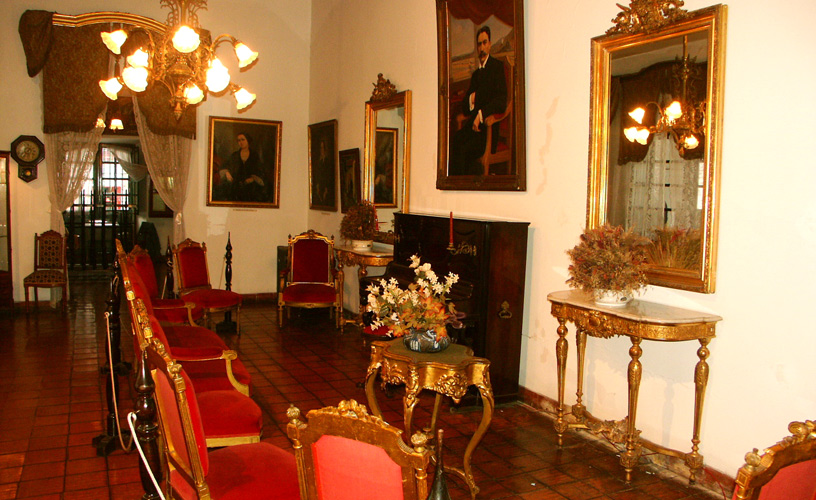
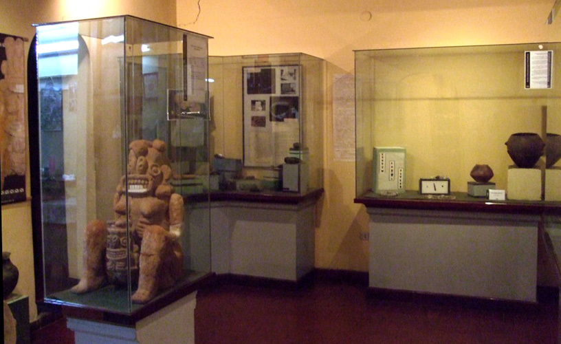
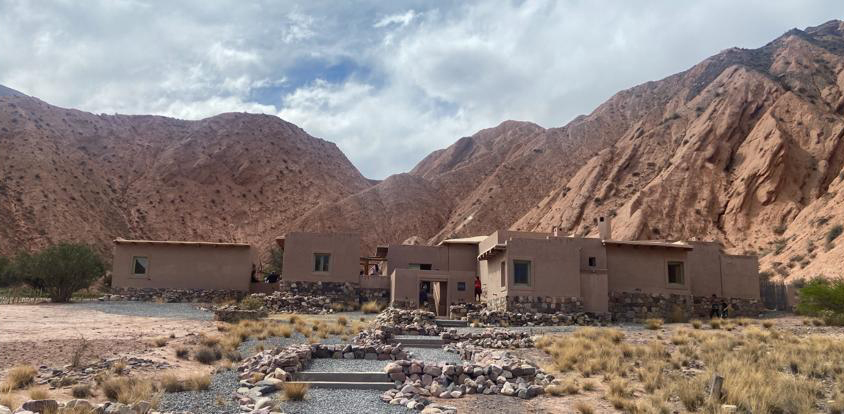

Museos en Jujuy.
Museo Histórico Provincial
Destaca por su exposición de vestimentas y objetos indígenas que permiten conocer la vida de los pueblos originarios.

Museo Arqueológico Provincial
Permite una profunda comprensión de las culturas originarias de Jujuy y su legado en la actualidad.

Museo de Arte Provincial
Plataforma para la innovación artística: Es un espacio donde se promueve el diálogo entre el pasado y el presente
